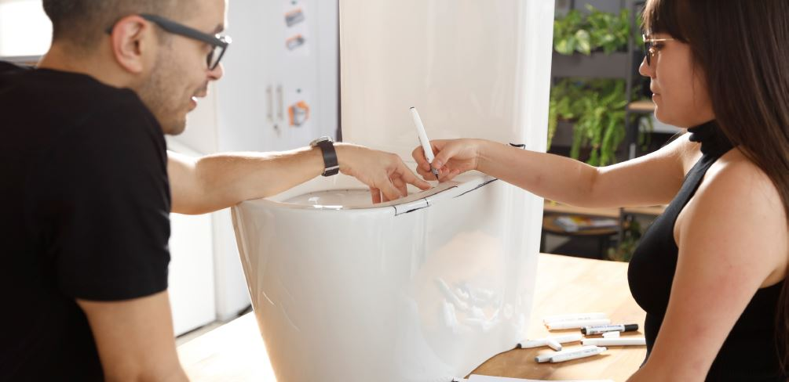
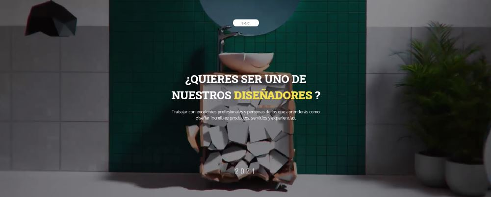
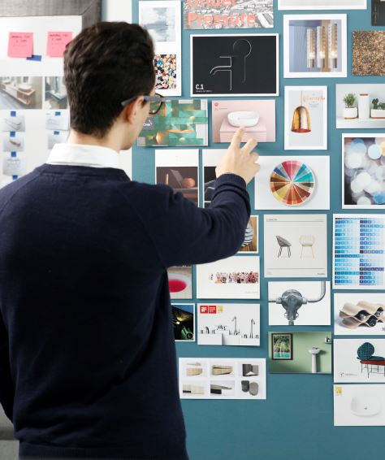
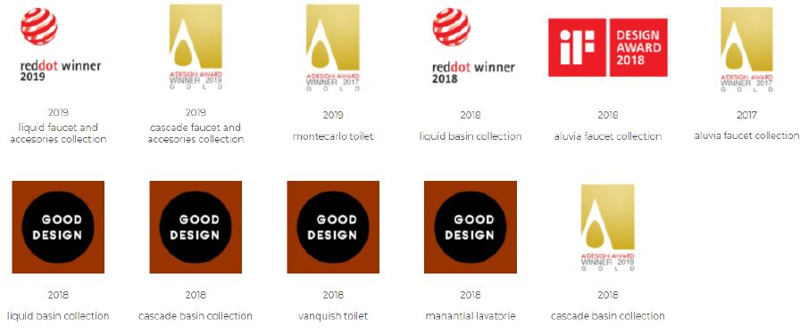

Assembling and consolidating creative teams that generate impact within organizations is and will be the main challenge of a leader, and as a leader, you must know that the fundamental basis for building a winning team is in the recruitment and management of talent.
Attracting and retaining the best creatives is not an easy task, but these 6 tips will surely help you.
Creative Recipe
-
Always offer value to yourcreatives.
Gone are the times when companies had a monopoly on work, newgenerations are not afraid of change their actually willing to take anyopportunity that comes their way if they aren’t feeling sufficientlymotivated in their current position. And believe me, their opportunitiescome to them at the return of a "click".
As a leader, you must offer scenarios that allow your creatives to staymotivated and challenge themselves professionally.MY EXPERIENCE IN CORONA
In my case, as the Pan American Design leader in Corona, Imaintain constant communication with my creatives, toensure that their interests stay aligned with the projectsthey work on. Then my duty is to cross their motivationswith the needs that I see in Corona in order to puttogether projects that are attractive to them and of benefitto the organization. In other words, as head of design, Imust design my portfolio of projects with the well-being ofmy creatives in mind.
-
Keep your relationshorizontally.
No matter how much experience you have in your area, no matter howgood you are at your craft, your creatives will always have something toteach you and contribute. Your duty as a leader is to generate trust sothat they can share that knowledge with you, with their peers, andwith the company. Forget hierarchies and earn the respect of yourteam through your example; let them see that they can learn fromyour experience, celebrate their victories, praise their successes, anddemand commitment and quality. Don't be afraid to demand hardwork when you, as a leader, work shoulder to shoulder with your team.
MY EXPERIENCE IN CORONA
In my case, even in my leadership position, I assumeoperational design responsibilities in differentprojects. I make sure to deliver quality work and ontime as part of respect for my teammates.
 -
Surround yourself with thebest people.
The best teams are not those full of stars but those who work in groupsand recognize the strengths and weaknesses of their individuals togenerate winning strategies.
Selecting the best talent is essential, and for this, rely on your team'sopinion, make them part of the process. In the future, your creativeswill admire their teammates because they know them thoroughly andbecause they walked with them during their selection.MY EXPERIENCE IN CORONA
In my team, we made the recruitment processtogether. We are proactive; we look for portfolios indifferent professional networks (Behance, Artistation,LinkedIn, etc.); we do not receive resumes, onlyportfolios. We like to judge candidates by the qualityof their work and not on their list of studies. If theirportfolio is good, we interview them as a team. Iknow this can be intimidating for candidates, butthat is where we see the union between us.Everyone's opinion counts, and the discussions areopen and honest. From my point of view, I know thatwe have hired the best talent available in Colombia,which makes me feel proud.
-
Stay sexy.
Make your team look sexy, make your creatives feel that they are partof something unique and belong to a dream team. The best way toachieve this is by demanding the highest quality in work; make sureyour people take pride in their results. Then be sure to promote greatexposure for your team and each of its individuals. As a leader, youmust communicate to the world that your team is a winner, that theirwork is the best. It isn't arrogance; it isn't vanity; it is about ensuringyour creatives' a sense of pride and belonging. Their work must bevalued.
MY EXPERIENCE IN CORONA
At Corona, we participate in design awards, city andcountry events, we share content on social networks,we take on enormous challenges, and we loved whenpeople tell us inside and outside the company: "youguys rock."

On the other hand, being an attractive employerallows you to attract the best talent when required. -
Share your knowledge.
Give it all up, don't keep anything to yourself to keep yourselfnecessary. Open the doors to other creatives, share your knowledgeand good practices, and you'll see how you nurture yourself bygenerating new relations. In my case, I'm surprised to see thatalthough I have given everything, sometimes there's something else Ican suddenly share, which brings me an incredible feeling.
MY EXPERIENCE IN CORONA
A few months ago, one of mydesigners took an international jobopportunity. At his farewell, he onlyhad words of gratitude and humility,which generated in me an incrediblefeeling of pride and admiration forthat person. The feeling of knowingyou're impacting the lives of yourcolleagues in a good way is priceless.The student will always outperformthe teacher, so make sure they exceedyou in a big way.
 -
Compete, measure yourselfwith the best.
If you want to keep your team motivated, surround yourself with thebest talent, and make your team look sexy, you must show the worldthat you're not afraid to measure yourself against the best.
MY EXPERIENCE IN CORONA
At Corona we have been participating year after yearin different design awards. Just as we have won 11international recognitions (Red Dot, IF Design, GoodDesign, etc.), we have also gone unnoticed in manyothers. But this only motivates us to improve ourwork and the way we communicate. We know wehave the skills to compete big and raise our levelevery day. You can't win every time, but when youdo, the feeling is excellent. It brings newopportunities, and it gives you credibility with yourpeers and within your organization. That triggers somany positive things.

Just the fact of participating is fun. It changes yourteam's routine, raises morale, generates a sense ofexpectation and solidarity, regardless of the result.